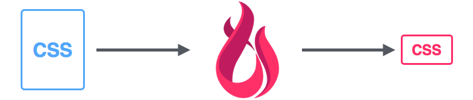
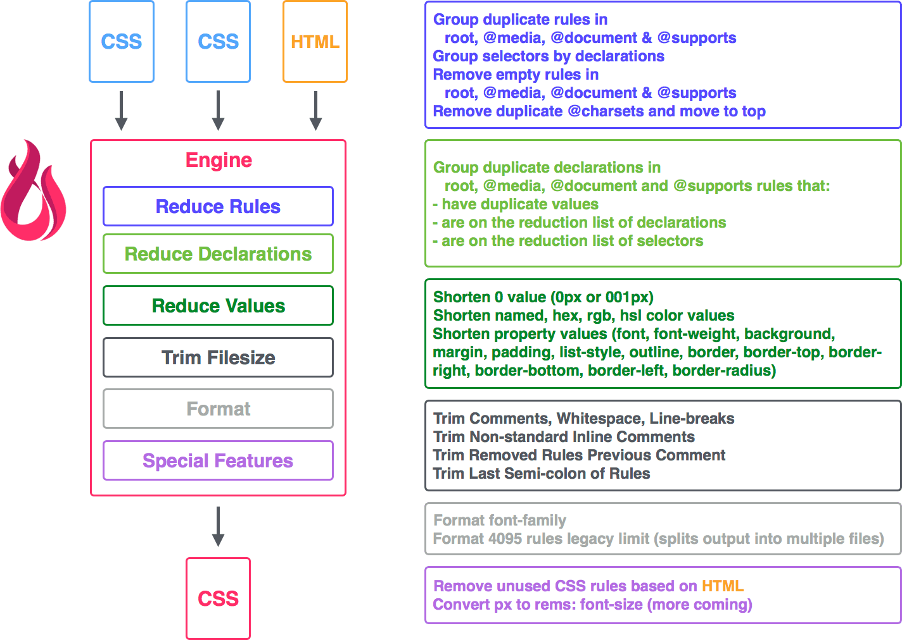
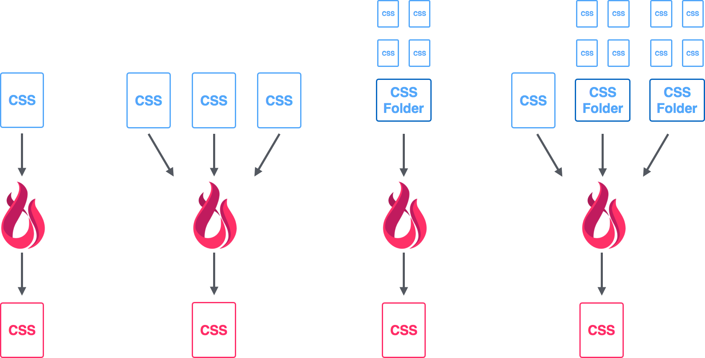
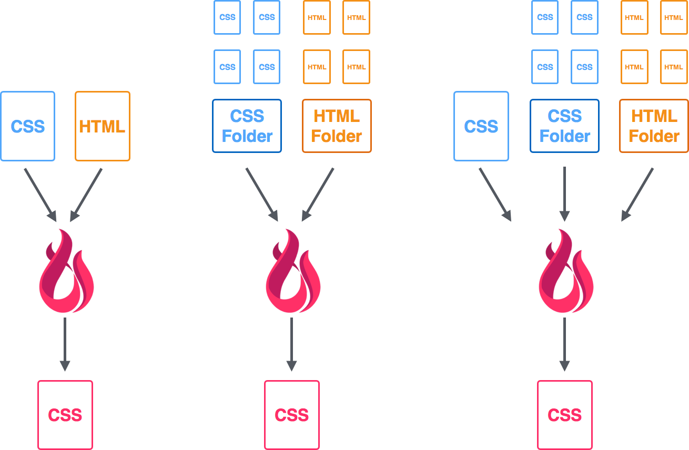
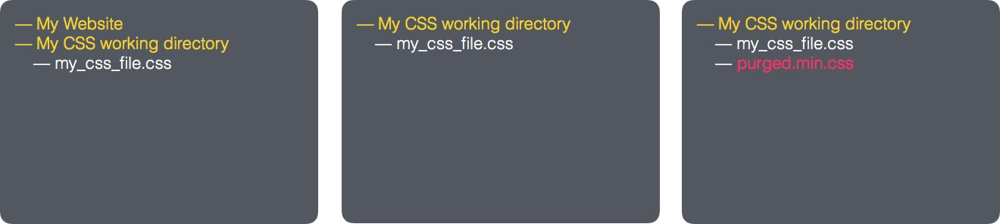
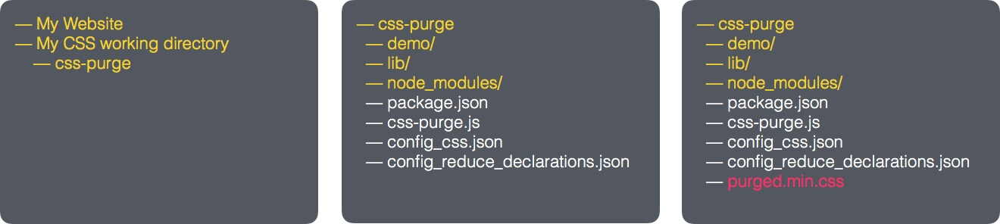
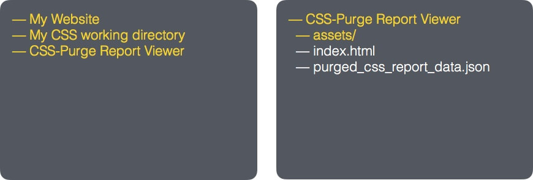

CSS-Purge
A CSS tool written in Node JS as a command line app or library for the purging, burning, reducing, shortening, compressing, cleaning, trimming and formatting of duplicate, extra, excess or bloated CSS, phew!
FEATURES
We started off with removing duplicate CSS rules and now we have grown a more comprehensive list of features.GET STARTED

Features

Under the hood
This is what the engine is doing in a nutshell. We have currently categorized everything that we do into a few core groups:
1. Reduce Rules
This is what we do to reduce the number of rules.
- Group duplicate rules in the root, @media, @document & @supports
- Group selectors by declarations
- Remove empty rules in root, @media, @document & @supports
- Remove duplicate @charsets and move it to the top
2. Reduce Declarations
Group duplicate declarations in root, @media, @document and @supports rules that:
- have duplicate values
- are on the reduction list of declarations (allows you more control over which declarations get grouped)
- are on the reduction list of selectors (allows you more control over which selectors get grouped)
3. Reduce Values
We shrink the size of the values where appropriate, this is what we do so far:
- Shorten 0 value (e.g. 0px, 00px, 000em -> 0; )
- Shorten named, hex, rgb, hsl color values
- Shorten property values (font, font-weight, background, margin, padding, list-style, outline, border, border-top, border-right, border-bottom, border-left, border-radius)
4. Trim Filesize
We remove everything else that is not necessary in the file for operation:
- Trim Comments, Whitespace, Line-breaks
- Trim Non-standard Inline Comments
- Trim Removed Rules Previous Comment
- Trim Last Semi-colon of Rules
5. Format
- Format font-family (we make sure there are quotes around multi-worded fonts)
- Format 4095 rules legacy limit (splits output CSS into multiple files)
6. Special Features
- Remove unused CSS rules based on HTML
- Convert px to rems: font-size (more coming)
Got some feature requests? Join us for a chat on gitter:
Visit the Community
Overview
Purging CSS

Purging Unused CSS

Usage
3 Ways to Use CSS-PURGE
- Global
- Local
- Library
Required: Node JS
1 - Global
A typical global workflow
Global usage is nice for doing something quick everywhere.
Install with npm:
npm install css-purge -g..then run with options:
css-purge [CLI Options]
CLI Options:
-V: displays the version number
-c "your CSS": direct CSS input
-i "filename/folder name location": CSS file(s) input
-m "filename/folder name/URL location": HTML file(s) input
-o "filename": The new CSS filename to output as
-f "config filename": run with a custom config filename
-d: run with the default config file (config_css.json must exist in folder)
-h: CLI help
Some example usage:
css-purge -c ".panel { color:red; color: blue; }"
CSS - Purge some CSS and output to terminal
css-purge -i main.css -o main.min.css
CSS file - Purge CSS from main.css and output to main.min.css
css-purge -i main.css -o main.min.css -f myconfig.json
CSS file with Custom Config - Purge CSS from main.css and output to main.min.css using myconfig.json for configuration
css-purge -i main.css -o main.min.css -m index.html
CSS file with HTML file - Purge CSS from main.css using index.html to compare and output to main.min.css
css-purge -i "main.css, framework.css" -o main.min.css -m "index.html, http://www.mywebsite.com/index.html"
Multiple CSS and HTML files - Purge CSS from main.css and framework.css (in that specific order) using index.html and index.html from www.mywebsite.com to compare and output to main.min.css
2 - Local
A typical local workflow
Local usage is nice for “setting up shop” for a project.
Clone with git/GitHub Desktop:
git clone https://github.com/rbtech/css-purge.gitor download from: https://github.com/rbtech/css-purge
Install dependencies:
npm installRun:
node css-purge [CLI OPTIONS]
CLI Options:
-V: displays the version number
-c "your CSS": direct CSS input
-i "filename/folder name location": CSS file(s) input
-m "filename/folder name/URL location": HTML file(s) input
-o "filename": The new CSS filename to output as
-f "config filename": run with a custom config filename
-d: run with the default config file (config_css.json must exist in folder)
-h: CLI help
Some example usage:
node css-purge -d
Config - Purge using the default config file (config_css.json)
node css-purge -c ".panel { color:red; color: blue; }"
CSS - Purge some CSS and output to terminal
node css-purge -i main.css -o main.min.css
CSS file - Purge CSS from main.css and output to main.min.css
node css-purge -i main.css -o main.min.css -f myconfig.json
CSS file with Custom Config - Purge CSS from main.css and output to main.min.css using myconfig.json for configuration
node css-purge -i main.css -o main.min.css -m index.html
CSS file with HTML file - Purge CSS from main.css using index.html to compare and output to main.min.css
node css-purge -i "main.css, framework.css" -o main.min.css -m "index.html, http://www.mywebsite.com/index.html"
Multiple CSS and HTML files - Purge CSS from main.css and framework.css (in that specific order) using index.html and index.html from www.mywebsite.com to compare and output to main.min.css
3 - Library
Libraries help share the awesomeness to more people :)
You can test out the library in your browser here.
Install:
npm install css-purge --saveSome example usage:
const cssPurge = require('css-purge');
//default settings are in the config files
cssPurge.purgeCSSFiles();
//purging a CSS file
cssPurge.purgeCSSFiles('demo/test1.css');
//purging a CSS file with HTML
cssPurge.purgeCSSFiles('demo/test1.css', 'demo/html/test1.html');
//purging a CSS file with HTML and options
cssPurge.purgeCSSFiles('demo/test1.css', 'demo/html/test1.html', {
trim : true,
shorten : true,
verbose : true
});
//purging a CSS file with HTML, options and config
cssPurge.purgeCSSFiles('demo/test1.css', 'demo/html/test1.html', {
trim : true,
shorten : true,
verbose : true },
'myconfig.json'
);
//purging CSS with options
var css = "p { color: blue; color: blue; }";
console.log(
cssPurge.purgeCSS(css, {
trim : true,
shorten : true
})
);
CSS-PURGE Report Viewer
CSS-PURGE Report Viewer is installed separately to nicely present the report data that CSS-PURGE generates.
Open a separate terminal window, then:
Clone with git/GitHub Desktop:
git clone https://github.com/rbtech/css-purge-report-viewer.gitor download from: https://github.com/rbtech/css-purge-report-viewer
Install reload:
npm install reload -gRun reload to view the report:
reload -b -e html, css, js, jsonReport Notes
Some things to check:
- make sure you are in the report viewers directory before running reload
- make sure CSS-Purge is set to generate into the report viewers directory
Config Options
For an overview of some of the options/features,
have a look Under the hood
Example config.json:
{
"options": {
"file_output": "purged.min.css",
"input_files": "demo/html/static-jekyll/_siteassets/main.css",
"input_html_files": "demo/html/static-jekyll/_site",
"trim": true,
"trim_keep_non_standard_inline_comments": false,
"trim_removed_rules_previous_comment": true,
"trim_comments": false,
"trim_whitespace": false,
"trim_breaklines": false,
"trim_last_semicolon": false,
"shorten": true,
"shorten_zero": false,
"shorten_hexcolor": false,
"shorten_hexcolor_extended_names": false,
"shorten_hexcolor_UPPERCASE": false,
"shorten_font": false,
"shorten_background": true,
"shorten_background_min": 2,
"shorten_margin": false,
"shorten_padding": false,
"shorten_list_style": false,
"shorten_outline": false,
"shorten_border": false,
"shorten_border_top": false,
"shorten_border_right": false,
"shorten_border_bottom": false,
"shorten_border_left": false,
"shorten_border_radius": false,
"format": true,
"format_4095_rules_legacy_limit": false,
"format_font_family": true,
"special_convert_rem": false,
"special_convert_rem_browser_default_px": "16",
"special_convert_rem_desired_html_px": "10",
"special_convert_rem_font_size": true,
"special_reduce_with_html" : false,
"special_reduce_with_html_ignore_selectors" : [
"@-ms-",
":-ms-",
"::",
":valid",
":invalid",
"+.",
":-"
],
"generate_report": true,
"verbose": true,
"bypass_media_rules": true,
"bypass_document_rules": false,
"bypass_supports_rules": false,
"bypass_page_rules": false,
"bypass_charset": false,
"zero_units": "em, ex, %, px, cm, mm, in, pt, pc, ch, rem, vh, vw, vmin, vmax",
"zero_ignore_declaration": [],
"report_file_location": "report/purged_css_report_data.json",
"reduce_declarations_file_location": "config_reduce_declarations.json"
}
}
| Option | Description |
|---|---|
| file_output | The name of the CSS file to output as. |
| input_files |
CSS file(s) to be processed.
- Can be a comma delimited string or an array of strings. - Each string represents a local file, folder or web URL. |
| input_html_files |
HTML file(s) to be searched for CSS that is used.
- Can be a comma delimited string or an array of strings. - Each string represents a local file, folder or web URL. |
| trim |
A “master switch” to turn on all the trim options.
- Only when its off can you turn on or off the other trim options. |
| trim_keep_non_standard_inline_comments |
Converts “//” comments into “/* */” comments.
- // comments are removed by default. |
| trim_removed_rules_previous_comment | Removes the comment (if it exists) before the rule that is removed. |
| trim_comments | Removes all comments |
| trim_whitespace | Removes all white/extra space |
| trim_breaklines | Removes all carriage returns / new lines. |
| trim_last_semicolon | Removes the last semicolon of in each rule. |
| shorten |
A “master switch” to turn on all the shorten options.
- Only when its off can you turn on or off the other shorten options. - Exceptions: shorten_hexcolor_UPPERCASE, shorten_background_min |
| shorten_zero |
Shortens all zero numbers by:
- removing duplicate leading zeros e.g. 0000px; becomes 0; - converts units like 0px to 0 |
| shorten_hexcolor |
Evaluates all named colors and converts them to thier hex color equivalents where shorter. e.g. blue to #00f
- color list reference |
| shorten_hexcolor_extended_names |
Evaluates all named colors in the extended range and converts them to thier hex color equivalents where shorter. e.g. crimson to #dc143c
- color list reference |
| shorten_hexcolor_UPPERCASE | Converts all hex colors to uppercase e.g. #ae1122 to #AE1122 |
| shorten_font | Groups as many font properties into the shortened version. |
| shorten_background | Groups as many background properties into the shortened version. |
| shorten_background_min | The minimum amount of properties before it will attempt to group the properties into the shortened version. Default setting is 2. |
| shorten_margin | Groups as many margin properties into the shortened versions. |
| shorten_padding | Groups as many padding properties into the shortened versions. |
| shorten_list_style | Groups as many list-style properties into the shortened version. |
| shorten_outline | Groups as many outline properties into the shortened version. |
| shorten_border | Groups as many border properties into the shortened version. |
| shorten_border_top | Groups as many border-top properties into the shortened version. |
| shorten_border_right | Groups as many border-right properties into the shortened version. |
| shorten_border_bottom | Groups as many border-bottom properties into the shortened version. |
| shorten_border_left | Groups as many border-left properties into the shortened version. |
| shorten_border_radius | Groups as many border-radius properties into the shortened versions. |
| format |
A “master switch” to turn on all the shorten options.
- Only when its off can you turn on or off the other shorten options. - Exceptions: format_4095_rules_legacy_limit |
| format_4095_rules_legacy_limit |
Some legacy browsers, like Internet Explorer 6-9, only support upto 4095 rules per stylesheet.
This feature helps bypass that limit by splitting the output CSS file into several CSS files. Filling from first to last. |
| format_font_family | Adds double quotes to multi-worded fonts if they are missing. |
| special_convert_rem | A “master switch” to turn on all the special convert to rem options. |
| special_convert_rem_browser_default_px | The default browser font size you are catering for. |
| special_convert_rem_desired_html_px | The default browser font size that you want. |
| special_convert_rem_font_size | Converts font sizes from px to rem. |
| special_reduce_with_html | A “master switch” to turn on all the special reduce with HTML options. |
| special_reduce_with_html_ignore_selectors | The list of selectors that the HTML process must ignore, thereby not removing them from the processed CSS. |
| generate_report | Allows the JSON report data to be generated. |
| verbose | Shouts out in the terminal what is happening. |
| bypass_media_rules | Any rules in @media are not evaluated. |
| bypass_document_rules | Any rules in @document are not evaluated. |
| bypass_supports_rules | Any rules in @supports are not evaluated. |
| bypass_page_rules | Any declarations in @page are not evaluated. |
| bypass_charset | @charset is not evaluated. |
| zero_units | The list of unit types that the shorten_zero evaluates. |
| zero_ignore_declaration | The list of declaration or property names for shorten_zero to ignore. |
| report_file_location | The file location of where to write the JSON report data. |
| reduce_declarations_file_location | The file location of the JSON file, that has the list of declarations or selectors to shorten. |
It always seems impossible until its done. ~ Nelson Mandela
Help
Source Issues
If you found a bug or a simple issue to sort out, just create an issue with a relevant label and or do a pull request on Github, and we will review it as soon as we can:
View code issues
Q&A
Got a question on how to do something and when answered will help everyone? Then place it on Stackoverflow with the tag “css-purge”:
View questions tagged with “CSS-Purge”
Community
Join us for a chat or a Q&A on gitter:
Visit the Community